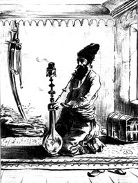
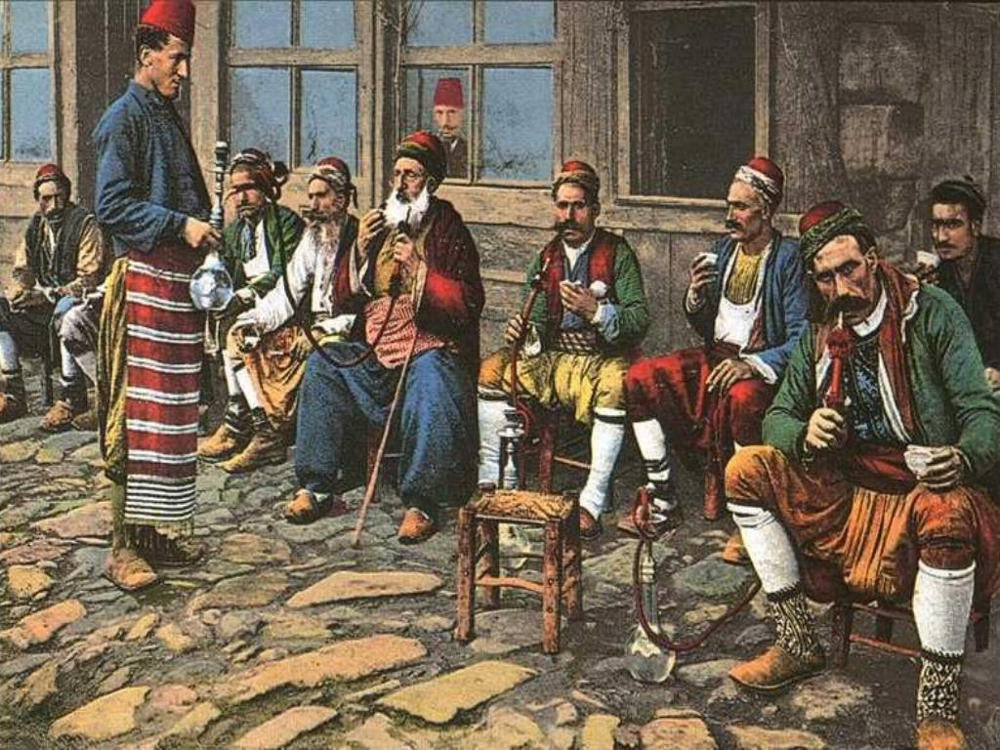

Тысяча и одно название кальяна
Начнём с названий. Словом «кальян» называем кальян только мы, иранцы, азербайджанцы и пакистанцы. Если вы хотите заказать кальян в одном из заведений в арабской стране, то ищите в меню слова «шиша», «наргила» или «аргила». В Узбекистане просите «чиллим», а в Албании «лулу» или «лулаву». В Испании кальян иногда называют «качимба», а у индусов и европейцев часто встречается такое название, как «хука» или «хугга». Также в Европе нередко кальян называют «water pipe» и «hubble-bubble». Намного реже, но встречаются ещё и такие названия, как «шишка», «бори», «pipa turca», «джаджир», «боур» и «гоза». Вроде всё.

Теперь о происхождении самых популярных названий. Слово «кальян» произошло от арабского «ġalīān» (что в переводе значит «кипящий»). «Хука» («хугга», «hookah», «hukka») появилось от персидского «huqqa» (так у них назывались горшки, в которых женщины хранили благовония, специи и драгоценности). «Наргила» пошло тоже из персидского языка от слова «nārghile», что означает кокос. Как ни странно, но слово «шиша» тоже представляет персидский язык и означает «стекло».